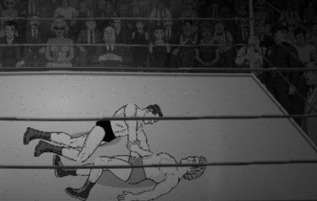
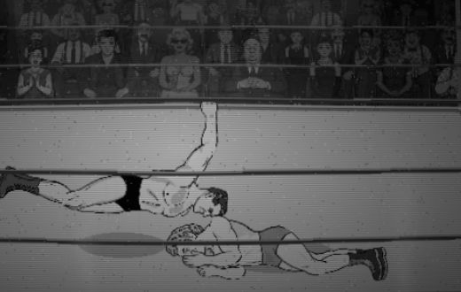
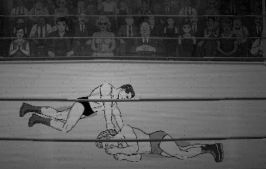
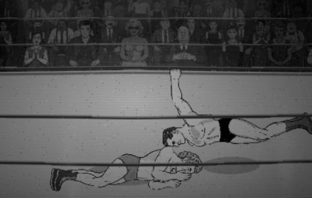
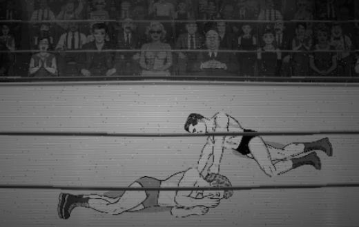
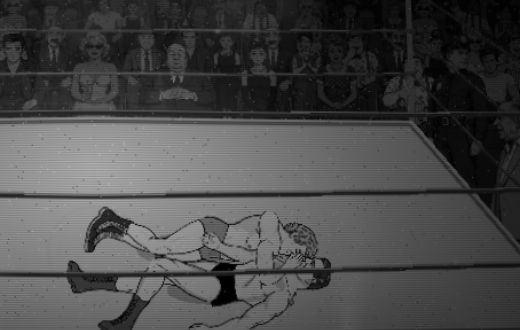
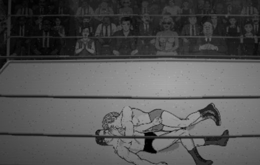
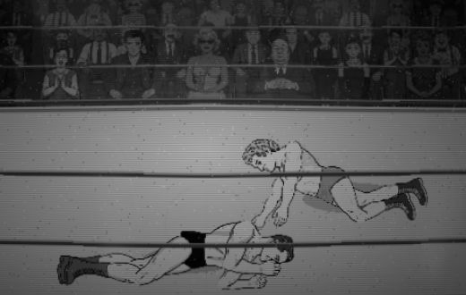

?falls=v1Stills only: approach / contact / roll-off, posed with the rig's own grounded renderer (src/animation/groundContact.js), nothing animated yet. Each row: the render, then the silhouettes (red attacker only, blue receiver only, green his striking arm on the receiver, white the rest of his body inside the receiver). Derek judges the look.
falls_g4a_r2_search.mjs) gave 285-480 px of overlap there against 1,000+ on the near side (the receiver's own splayed near arm and drawn-up knee fill that side), and the near-side poses that came close had his torso standing straight up the screen. The bodies are separate; his torso is drawn behind the receiver's, and only his striking arm is raised over it.| pair | before: peak miss (G4a) | before: frames with miss | approach miss | contact miss | contact: arm on him (allowed) | roll-off miss | contact: front conflict |
|---|---|---|---|---|---|---|---|
| lou on george, supine | 3674 | 158 | 109 | 672 | 573 | 230 | 0 |
| lou on george, prone | 3426 | 160 | 0 | 316 | 483 | 47 | 0 |
| george on lou, supine | 3932 | 156 | 0 | 927 | 542 | 157 | 0 |
| george on lou, prone | 3171 | 156 | 0 | 438 | 595 | 0 | 0 |







